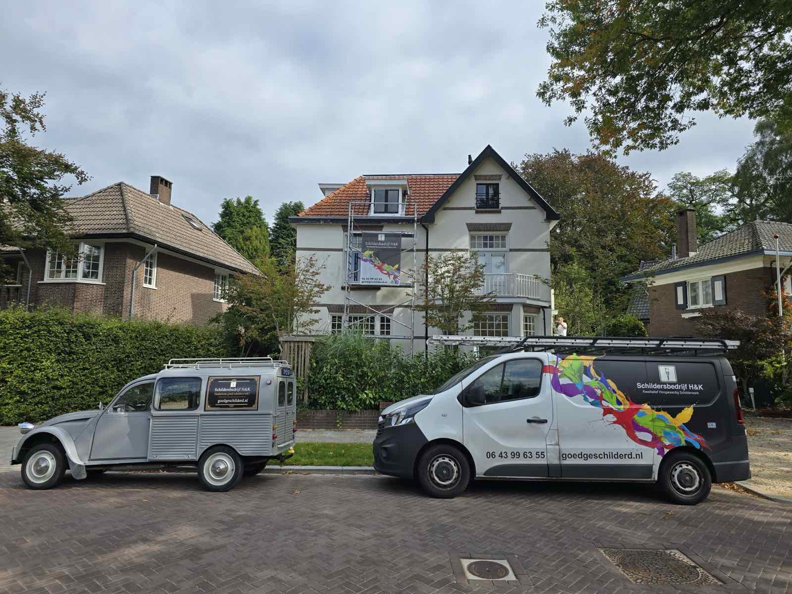
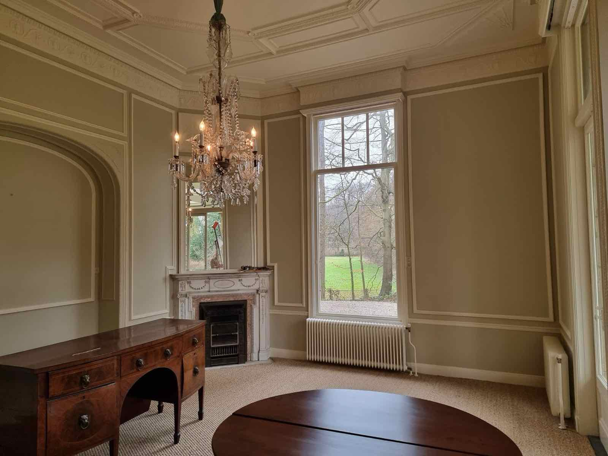
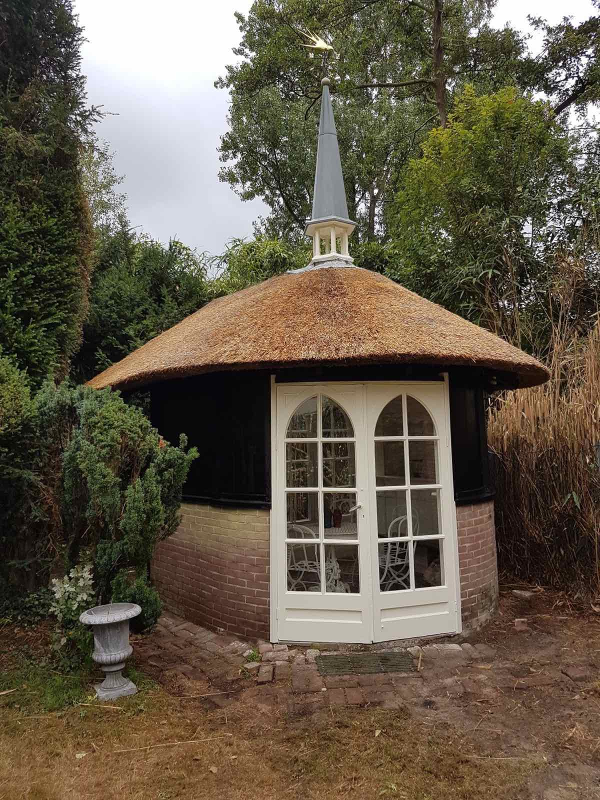
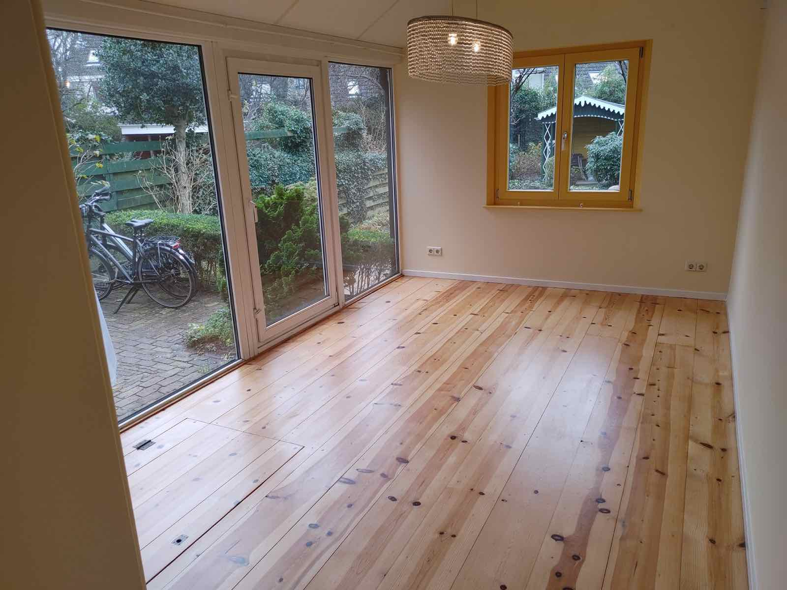
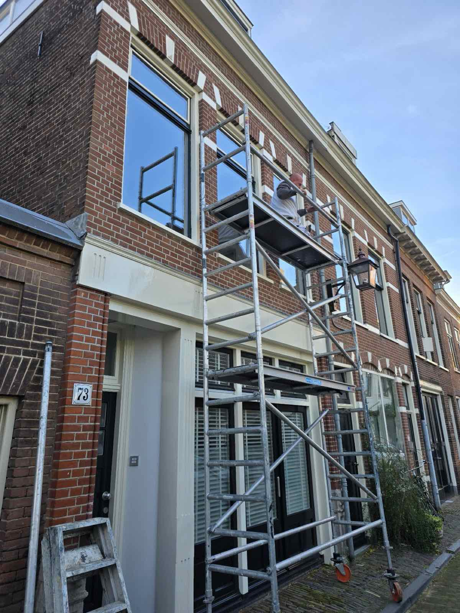
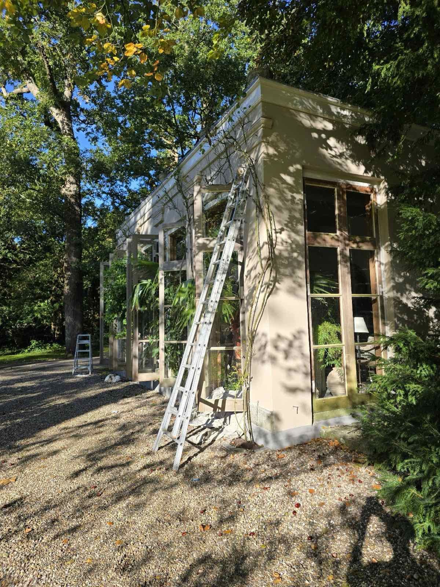
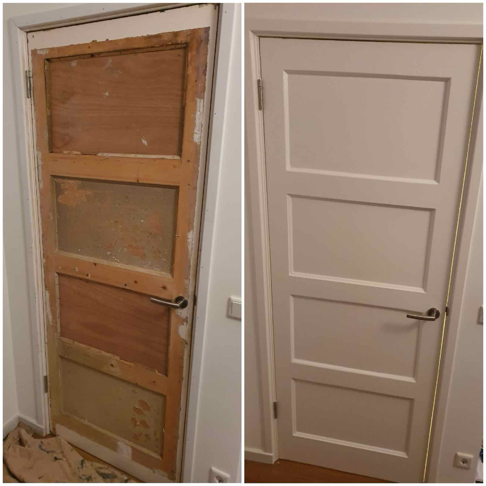
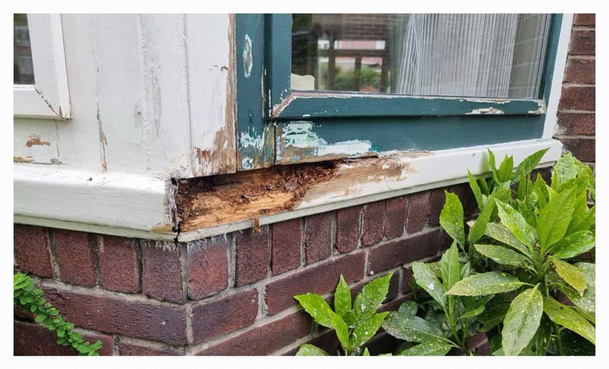
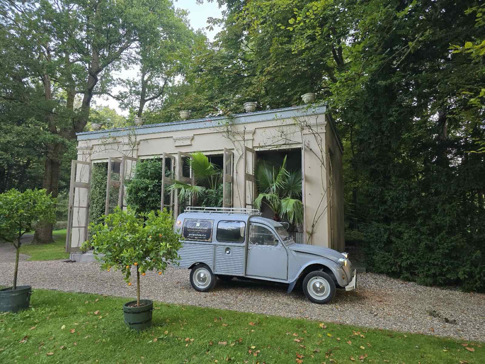

Familiebedrijf in Apeldoorn
Kwalitatief hoogwaardig schilderwerk.
Vakmanschap van generatie op generatie. Wij schilderen binnen en buiten, herstellen houtrot en werken alleen met topmerken, zodat uw huis er jaren mooi bij staat.

★★★★★5 sterren uit 41 Google-reviews
Klussen waar wij trots op zijn
Van een stijlkamer in een landhuis tot een antiek theehuisje. We leggen ons werk vast op foto en met de drone.





Wat wij doen
Vrijwel alle soorten schilderwerk. Elke klus krijgt een aanpak op maat, met veel aandacht voor het voorwerk.
- Binnen- en buitenschilderwerk
- Houtrotreparatie en deelvervanging
- Keimen
- (Glasweefsel)behangwerk
- Decoratieve technieken, zoals vergulden met bladgoud
Ook spuitwerk: wij zijn een gecertificeerd verfspuitbedrijf.


Ons twee-jaren-systeem
Voor een optimaal resultaat verdelen wij de schilderbeurt over twee fasen. Zo gaat het schilderwerk zo lang mogelijk mee.
-
1
Eerst beschermen
In de eerste fase krijgt het werk een beschermende laag.
-
2
Daarna perfect afwerken
In de tweede fase volgt de perfecte afwerking, voor maximale levensduur.
Wij werken uitsluitend met topmerken
Sikkens, Sigma, Trimetal, Keim en Jotun

Al 40 jaar vakmanschap
Wij zijn een familiebedrijf met een lange geschiedenis in het schildersvak. Wat ons onderscheidt is de persoonlijke benadering: iedere klant is anders, dus elke opdracht krijgt een eigen aanpak.
-
Eind jaren '80
D.J. Heinsbergen neemt het bedrijf over van zijn vader. Zo'n 35 jaar bestaat het als Schildersbedrijf D.J. Heinsbergen uit Haarlem.
-
2012
Henk Kuif, de schoonzoon van Heinsbergen, komt in het bedrijf.
-
2014
Het bedrijf gaat verder als Schildersbedrijf H&K. Het werkgebied verhuist langzaam naar Apeldoorn.
Met ons eigen dronebedrijf Apeldrone leggen we projecten ook vanuit de lucht vast. In maart 2025 stonden we met de bedrijfswagens in de Schildersvakkrant.
Wat klanten zeggen
★★★★★5 sterren uit 41 reviews op Google
"Na het stucen van de plafonds, benedenverdieping geheel geschilderd door Schildersbedrijf H&K. We zijn enorm tevreden, het is een prachtig resultaat geworden. Er wordt nadruk gelegd op het voorwerk en prepareren en dat zie je dan ook terug. Verder fijne communicatie en meedenken. Aanbevolen!"
"H&K heeft bij ons het hele huis van binnen bijgewerkt en delen opnieuw geschilderd. Het resultaat is bijzonder mooi geworden. Maar zeker ook het contact is een grote plus. Ze denken mee en werken hard, zonder dat je het idee hebt dat er de hele dag vreemde mensen in je huis rondlopen. Kortom: ik ben meer dan tevreden!"
"Fijn en betrouwbaar schildersbedrijf. Afspraak is afspraak. Schilders verstaan hun vak. En leveren mooi werk. Ze werken netjes, denken mee en zijn beleeft. Einde dag is alles opgeruimd. Ons huis staat er weer mooi bij de komende jaren. Mannen van HenK bedankt. 👍🏻"
"Als je een schildersbedrijf in het betere segment zoekt. Ben je hier op het juiste adres. Tegenwoordig hebben ze nog een extra service. Je kunt drone beelden of filmpjes van je huis laten maken"
Vraag vrijblijvend een offerte aan
Bel ons direct, of laat een bericht achter. Wij nemen zo snel mogelijk contact met u op.
- Telefoon
- 06 43996355
- henk@goedgeschilderd.nl
- Adres
- Hobbemalaan 84
7312 MV Apeldoorn - Openingstijden
- Maandag tot en met zondag, 24 uur geopend